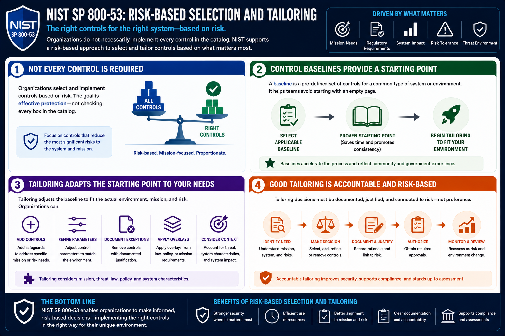

What Is NIST SP 800-53?
Baselines and Risk-Based Selection
Connecting to LMS... Progress: in progress
Version 1.0 | Date: 2026-06-16 | Introductory overview of NIST SP 800-53 security and privacy controls.

Narration
Organizations do not necessarily implement every control in the catalog. NIST supports a risk-based approach that allows organizations to select and tailor controls based on mission needs, regulatory requirements, system impact, and risk tolerance.
Control baselines provide starting points. A baseline can help teams avoid beginning with an empty page when deciding which safeguards may apply to a system.
Tailoring adjusts the starting point to fit the actual environment. Organizations may add controls, refine parameters, document exceptions, or apply overlays based on mission, threat, law, policy, and system characteristics.
Good tailoring is accountable. Decisions should be documented, justified, and connected to risk rather than treated as informal preference.